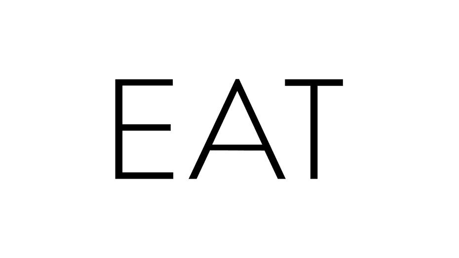
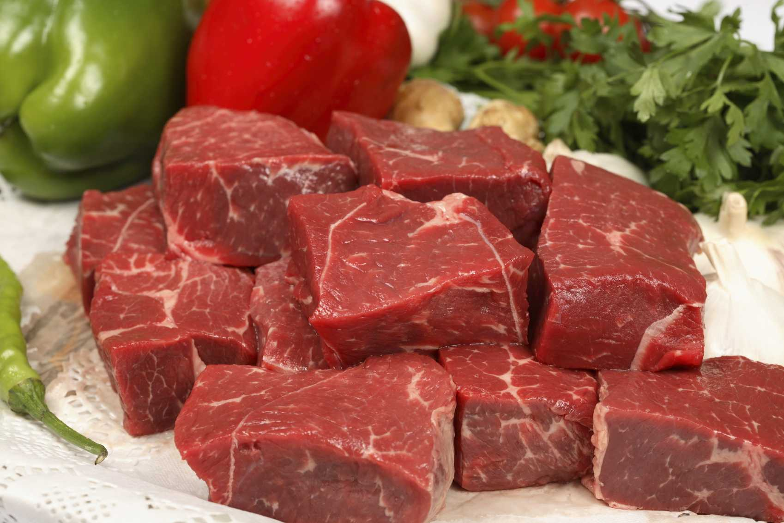
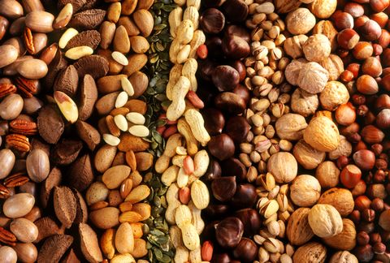
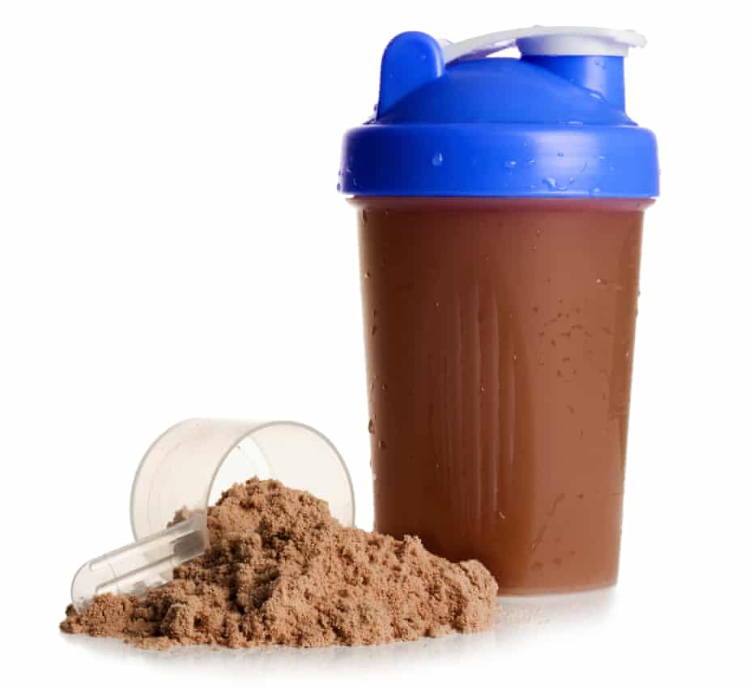

How to gain weight?
Below are some healthy ways to gain weight when you're underweight:

- Eat more frequently. When you're underweight, you may feel full faster. ...
- Choose nutrient-rich foods. ...
- Try smoothies and shakes. ...
- Watch when you drink. ...
- Make every bite count. ...
- Top it off. ...
- Have an occasional treat. ...
- Exercise.
What to do?
Simply eat, you want to gain weight? there is only one way which is eating at anytime. Here we are not talking about gaining muscles but gaining weight. To gain weight you must be on a calorie surplus which mean eating more than you spend each day. With this way you will be on a calorie surplus which will make you gain weight
Below will be some examples of food that may help you to gain weight
1.Red meat
This includes lamb, beef, pork and some others. ... This includes meat from poultry like chicken and turkey. Grass-fed, organic meat.Consuming red meat has been shown to help with building muscle and gaining weight. Steak contains both leucine and creatine, nutrients that play a significant role in boosting muscle mass. Steak and other red meats contain both protein and fat, which promote weight gain.
2.Nuts
Nuts are a very popular food.They’re tasty, convenient, and can be enjoyed on all kinds of diets — from keto to vegan.Despite being high in fat, they have a number of impressive health and weight benefits.Cashews, almonds, pecans, sunflower seeds, flax seeds, Brazil nuts, walnuts, and pumpkin seeds are all good for you. They contain polyunsaturated fats that add healthy calories to your diet.Calories significantly add weight in your body,so nuts are a good source of gaining weight
3.Protein shake
Protein shakes are clearly beneficial for athletes and those who work out to build muscle, lose weight, or increase endurance.Protein shakes can help a person to gain weight easily and efficiently. A shake is most effective at helping to build muscle if drunk shortly after a workout. However, it is important to note that premade shakes often contain extra sugar and other additives that should be avoided.
All these foods are ways in which you can gain weight,but do not forget that not everybody can eat the same food.There are some people who can't eat all source of protein,so before doing any change to your diet kindly go to see your doctor